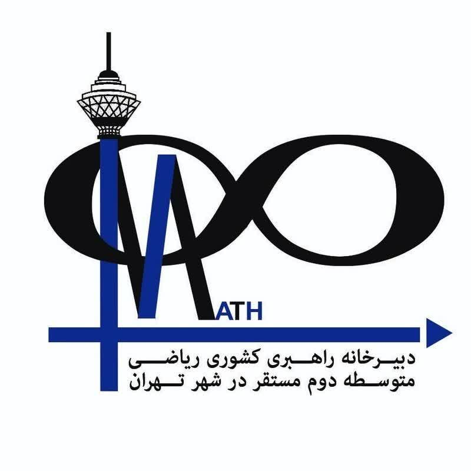

۱. دایرهٔ محیطی: OA = OB = OC = R (همرسی عمودمنصفها)
۲. دایرهٔ محاطی داخلی: r = Sp (همرسی نیمسازهای داخلی)
۳. دایرههای محاطی خارجی: ra = Sp − a rb = Sp − b rc = Sp − c
۴. رابطهٔ معکوس شعاعها: 1ra + 1rb + 1rc = 1r
